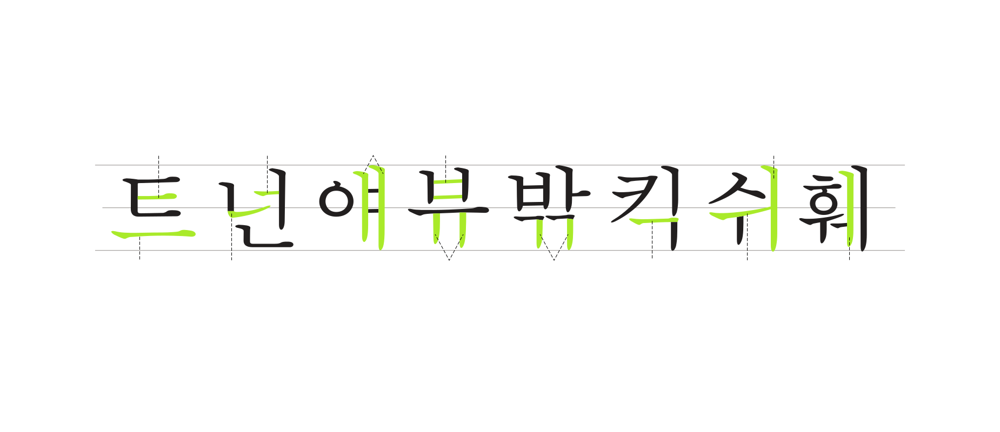

안기둥
겹기둥에서 안쪽에 있는 기둥.
기둥
홀자를 이루는 세로로 된 모든 줄기.
특히 글자의 전체 힘을 지탱하는 역할에서 비롯된 이름.
이음보
섞임모임 글자에서 다음의 기둥으로
이어지기 위해 휘어진 보.
가로줄기
닿자를 이루는 가로로 된 모든 줄기.
세로줄기
닿자를 이루는 세로로 된 모든 줄기.
짧은 기둥
홀자를 이루는 가로줄기에 짧게 붙은 기둥.
걸침
두 세로줄기 사이에 걸친 가로줄기.
혹은 두 기둥 사이에 걸친 곁줄기.
겹기둥
홀자에서 두 개가 모인 기둥.
곁줄기
세로 홀자에서 밝은 소리나 어두운 소리를 구별하도록 하는 기둥 곁에 붙은 짧은 줄기.
이음줄기
닿자의 가로줄기가 다음의 닿자나
기둥으로 이어지기 위해 휘어진 줄기.
덧줄기
ㅋ,ㅌ에서 본래의 ㄱ,ㄷ 모양에 덧붙은 줄기.
보
홀자를 이루는 가로로 된 모든 줄기.
건축에서 비롯된 이름으로,
기둥과 구조가 어울리도록 한다.